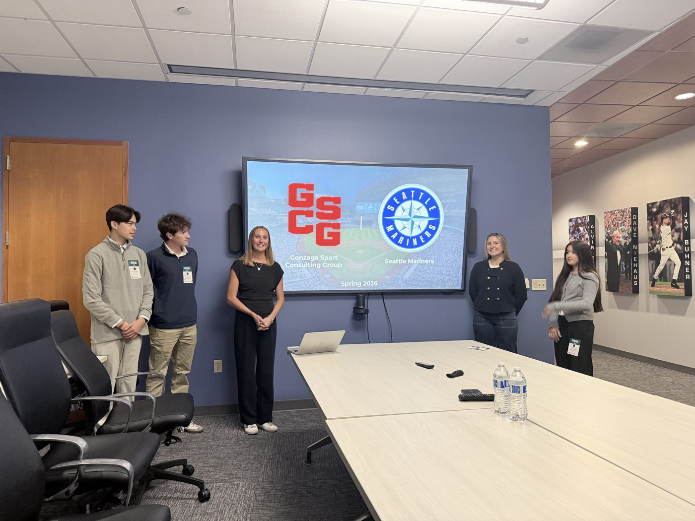
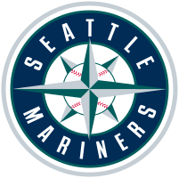
MLB · SeattleSeattle Mariners
A clearer fundraising story, MLB benchmarks, and new in-stadium experiences for new fans.
Five clients. Two cities. Fifty-seven students. Here is what the Gonzaga Sport Consulting Group did this spring, in eight short sections.
This newsletter is for the clients, advisors, donors, and families who made it possible. If you only read one section, read the students' own words.
"Lean into the hard things. When I feel uncomfortable or in the unknown, that is where I have grown the most."
Mia Crosby · GSCG ConsultantEvery figure links to where it came from.
Each team took one question from a client, worked it for a semester, and presented the answer in person.


MLB · SeattleA clearer fundraising story, MLB benchmarks, and new in-stadium experiences for new fans.
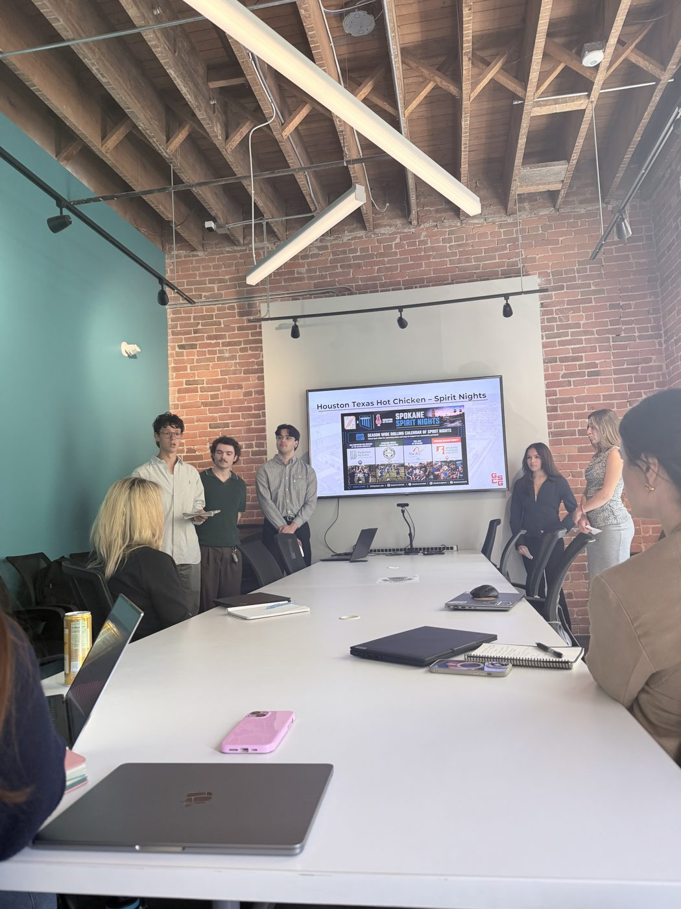
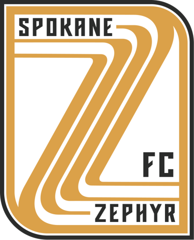
NWSL · SpokaneA ranked list of high-fit sponsors and one sponsorship story to tell them.
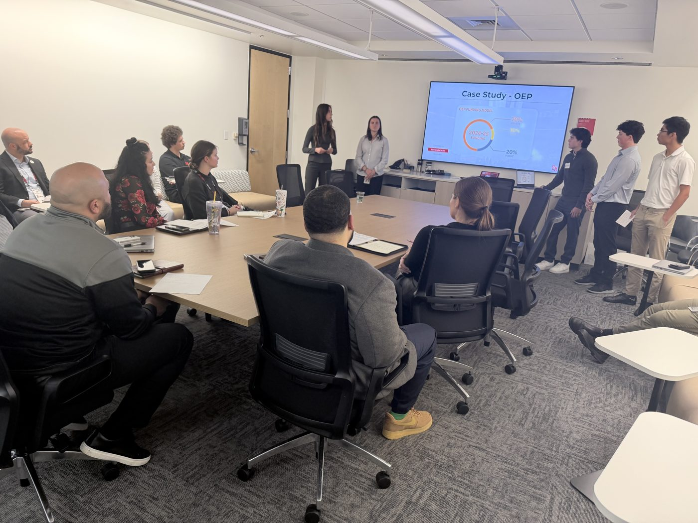
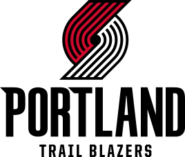
NBA · PortlandBest practices and a repeatable framework for stronger B2B partnerships.
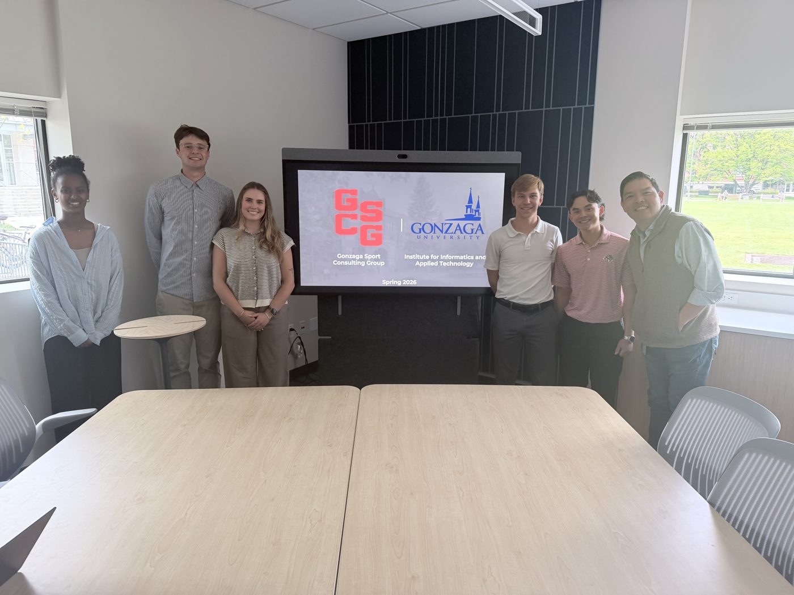
A national map of sports analytics programs, with the gaps and opportunities marked.
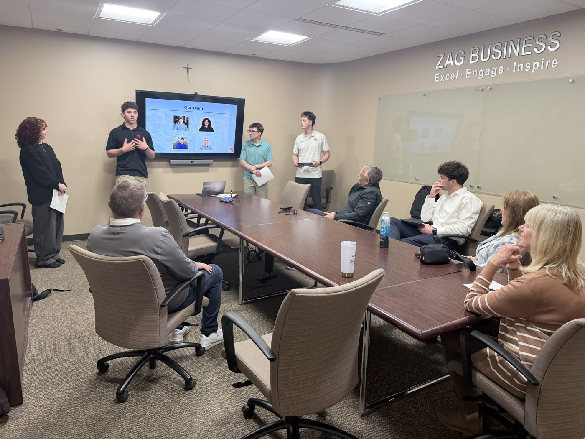
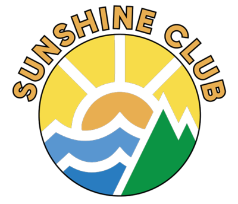
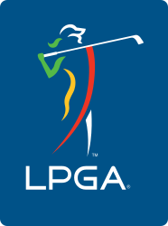
Golf · SpokaneThe case for bringing an LPGA event to Spokane, built on small-market sponsorship research.
A project advisor guides each team. The final presentation happens in person wherever a trip makes it possible.
Real presentations, behind-the-scenes tours, and the kind of growth that only happens on the road.
Seven students. A day at Nike World Headquarters with Zag alumni. A midpoint presentation to the Trail Blazers at Moda Center, then the game as their guests.
The Portland trip kicked off at Nike World Headquarters in Beaverton, where Gonzaga alumni Andrew and Hayley welcomed the group and shared their journeys from Gonzaga into the sports and business world. Hearing how former Zags navigated their paths, the pivots, the opportunities, the hard lessons, made the experience feel both inspiring and genuinely practical.
From Nike, the group connected with alumna Torrey for a candid conversation about professional growth from outside the traditional consulting track. Her perspective on staying adaptable and showing up fully in roles that look different from what you expected was one of the more memorable moments of the trip.
The experience culminated at Moda Center, where the Portland Trail Blazers hosted the group with a level of generosity that made a real impression. We met with members of their staff across multiple departments, got a behind-the-scenes tour of the facility and its premium spaces, insights that directly shaped our midpoint presentation, and then presented our work directly to their team. To close it out, the Trail Blazers hosted us at a game, giving the group a chance to see the organization in full operation and end the trip on a high note.
More than the individual stops, what stood out was how the trip deepened the group's sense of unity. The shared experience of traveling, presenting, and learning together created something that's hard to replicate in a classroom, and something the team will carry long after the semester ends.
Full story online: gscg.pages.dev/newsletter/spring-2026/highlights/
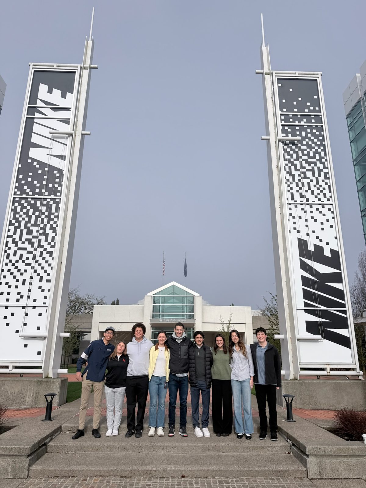
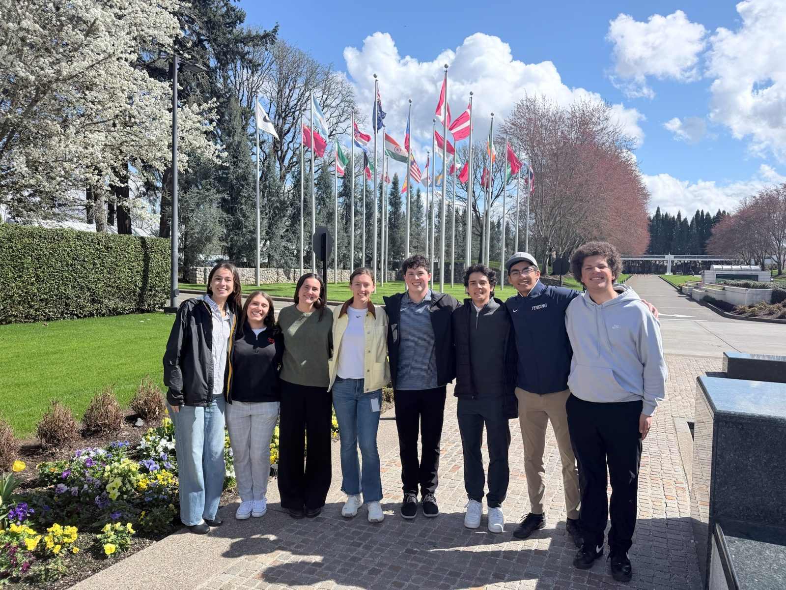
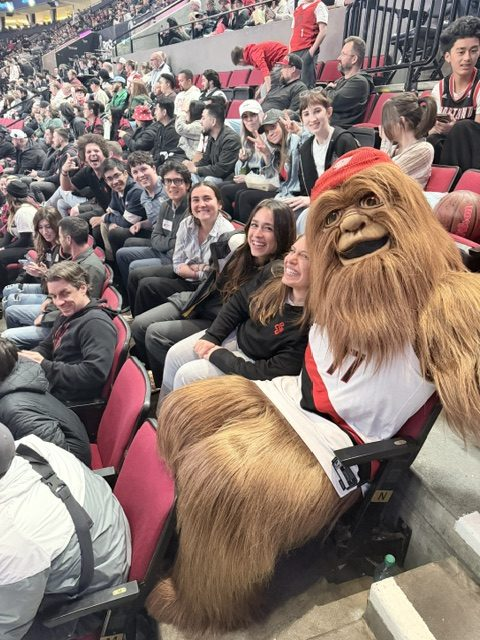
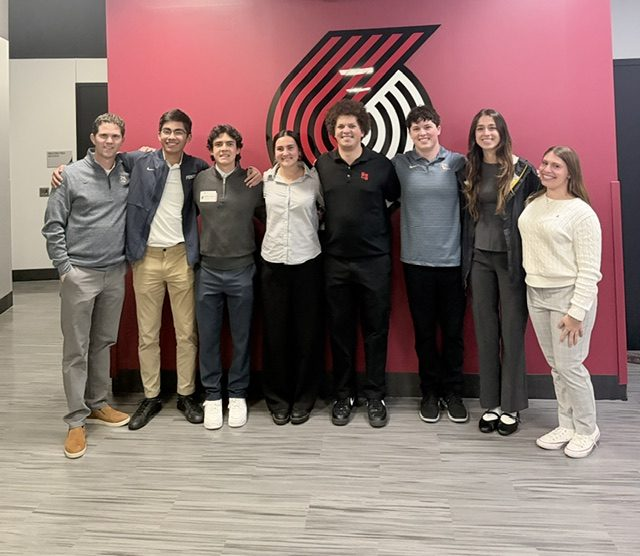
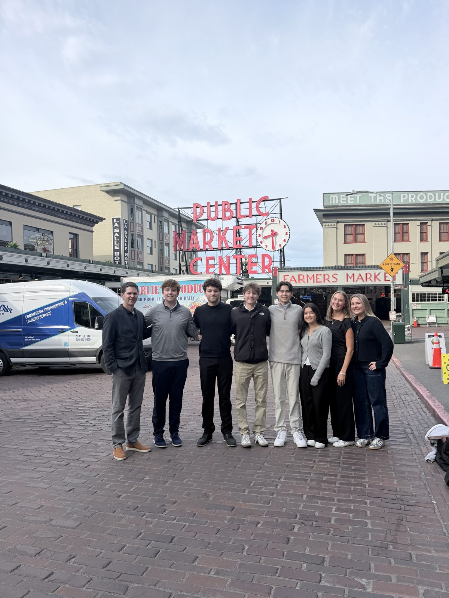
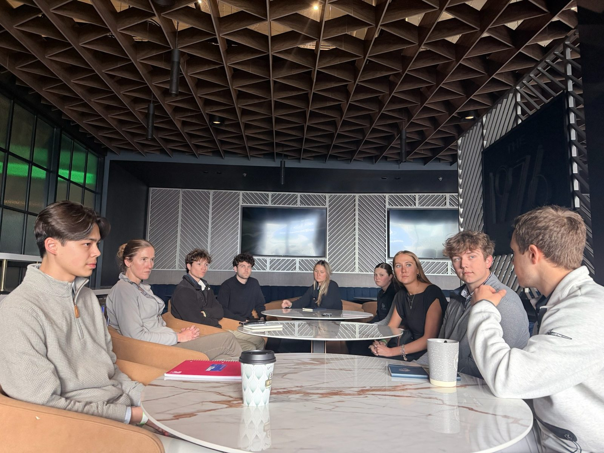
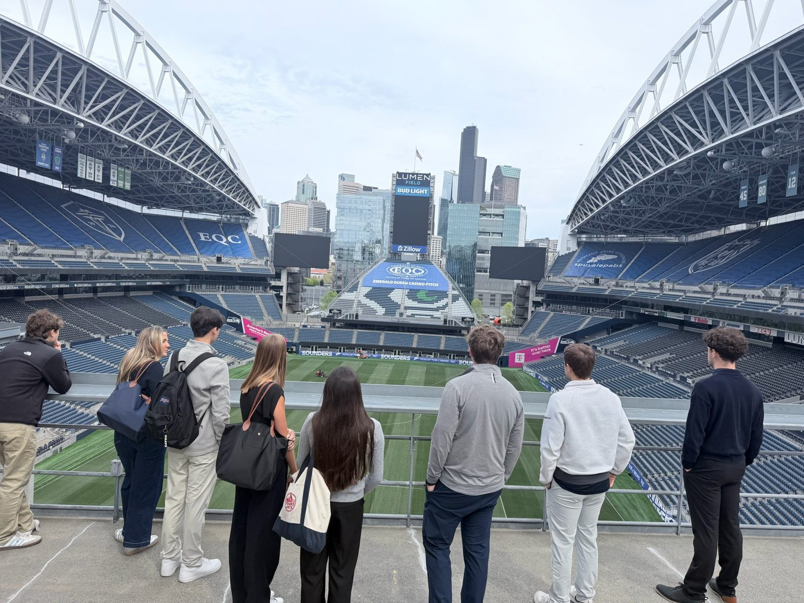
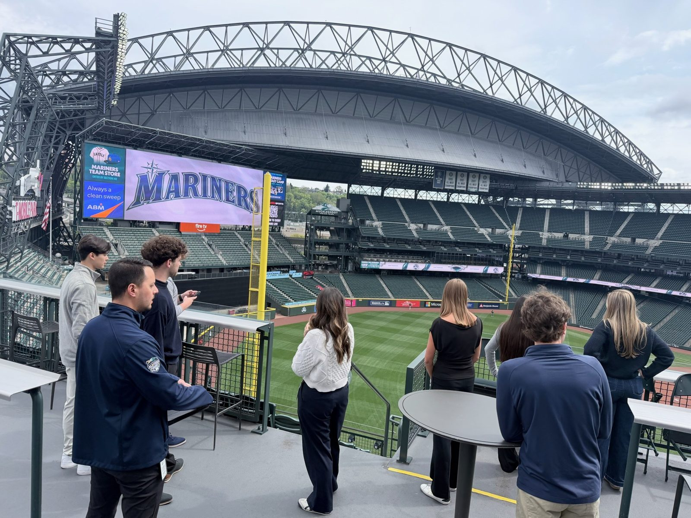
Seven students. Breakfast at Pike Place. Behind the scenes at Lumen Field with Michael and Lisa. Then the final presentation to the Mariners at T-Mobile Park, and batting practice on the field.
The Seattle trip was a true combination of everything we'd worked toward all semester. It started Tuesday morning at Pike Place, grabbing breakfast together as a group before the big day, a simple moment that helped everyone settle in and reconnect before things got real.
From there, we headed to Lumen Field, where advisory member Michael and Lisa welcomed us with a full stadium tour and took time to share their journeys in the sports industry. One theme kept surfacing: you never stop learning. Lisa described how a colleague helped her learn Tableau, which helped her carve out a niche role, a perfect example of the kind of peer support we try to build within GSCG. After the tour, Michael sat in on a run-through of our Mariners presentation and gave us feedback we genuinely couldn't have found on our own. That kind of real-world perspective is hard to come by, and it meant a lot.
We grabbed a quick lunch at Hatback across the street, made some last-minute adjustments, and made our way over to T-Mobile Park. Francis, who had been guiding our work throughout the semester, was there along with Amanda and Jaron, who gave us a tour of parts of the stadium we hadn't yet explored. Finally meeting everyone in person after months of collaboration made the whole experience feel full-circle.
The panel discussion was one of the highlights, more conversational than most panels, offering a genuine look at what careers in sports actually look like across a wide range of roles. Francis mentioned that much of her day-to-day is filled with challenges, and those are the things she celebrates most. That perspective hit close to home for GSCG, where we push ourselves into hard things on purpose.
Batting practice was probably where we had the most fun as a group, on the field, in the dugout, taking photos. It's the kind of moment you don't forget.
The presentation itself covered SEA Change, ballpark segmentation, and theme night breakdowns. Shoutout to Eamon and Marcus, the Claude AI dashboards they built were genuinely impressive and drew a lot of attention in the room. Hearing afterward that the Mariners had independently identified many of the same things we had was one of the most validating moments of the semester. We're excited to explore the potential to work together again. That made everything worth it.
Full story online: gscg.pages.dev/newsletter/spring-2026/highlights/
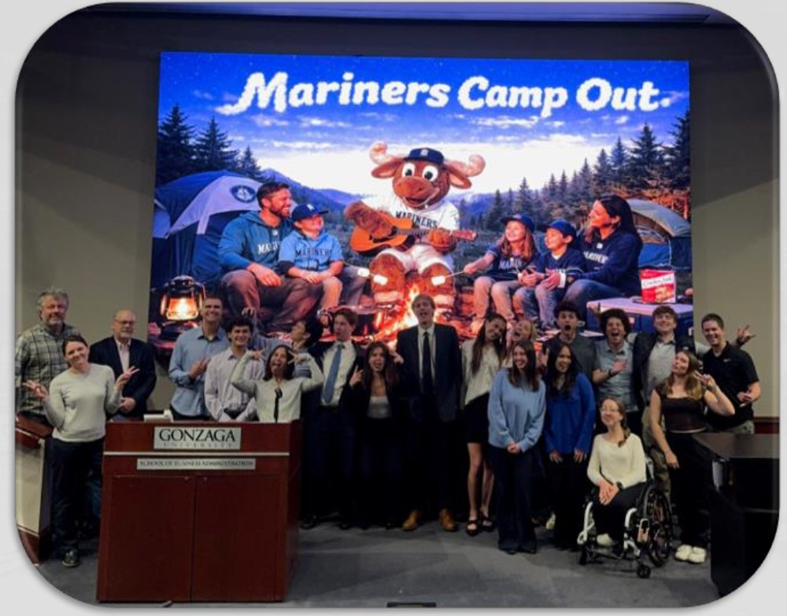
GSCG's second annual Case Competition asked for a community event at T-Mobile Park for the Mariners. Mateo Sandoval, Maximo Youle, and Jonathan Petrogeorge won with Mariners Camp Out.
Six teams competed, from solo participants to groups of three. Each had a week and a half from receiving the scope to their first-round presentation. The quality across the board made it genuinely difficult to select only three teams to advance.
Advancing teams met with Case Competition Associates and GSCG directors for feedback before the final round in Wolff Auditorium, with three faculty judges on the panel. The winning Mariners Camp Out concept stood out for both its creativity and its feasibility.
The planning side came with real challenges, including a last-minute client pivot. Next time GSCG plans to market earlier on campus and to keep participants in the GSCG community well beyond the competition.
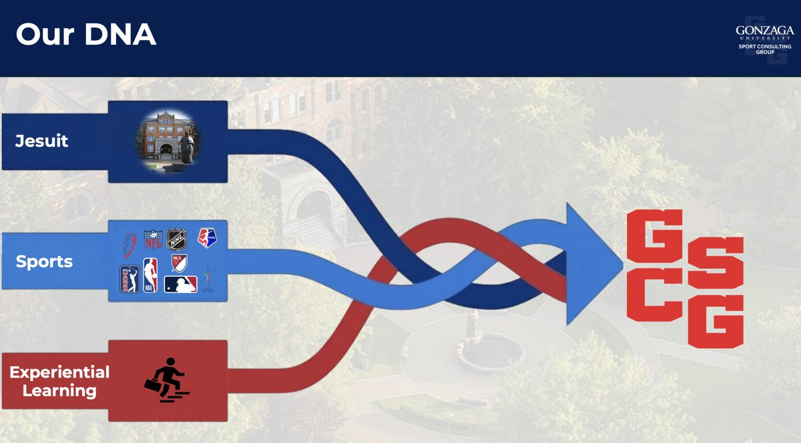
GSCG presented its work to the Board and university administration for the first time: the client outcomes, the trips, and where the group goes next.
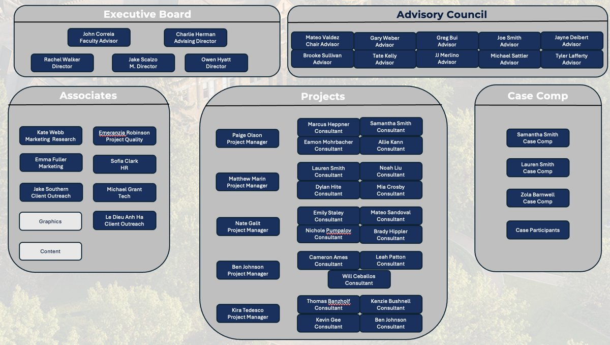
A new tier in marketing, HR, and IT. A clear path from associate to consultant. They launched this newsletter.
Seven individuals stepped into brand-new roles covering marketing, human resources, and information technology, bringing specialized support to the group's operations and early, hands-on experience to the members who took them.
There were no playbooks to inherit. That came with a learning curve and a wide-open opportunity to define what the positions should look like. Even so, the associates delivered: a newsletter launch, a more consistent social media presence, a client survey for an active project, and HR and IT infrastructure that will pay off for semesters.
This semester was a proof of concept. The associate model works. The next step is to refine role expectations and deepen the experience.
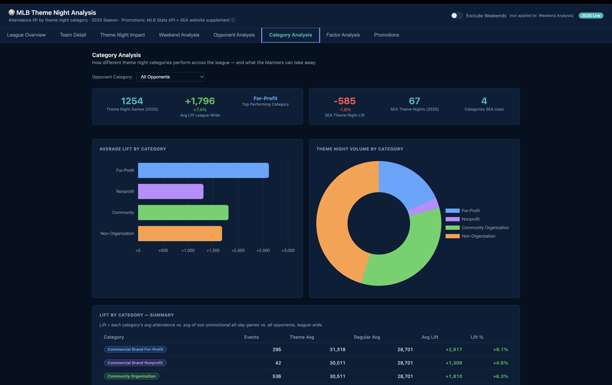
Students used Claude Code for client dashboards, the recap site, and the thank-you sites. The Mariners dashboards drew the most attention in the room.
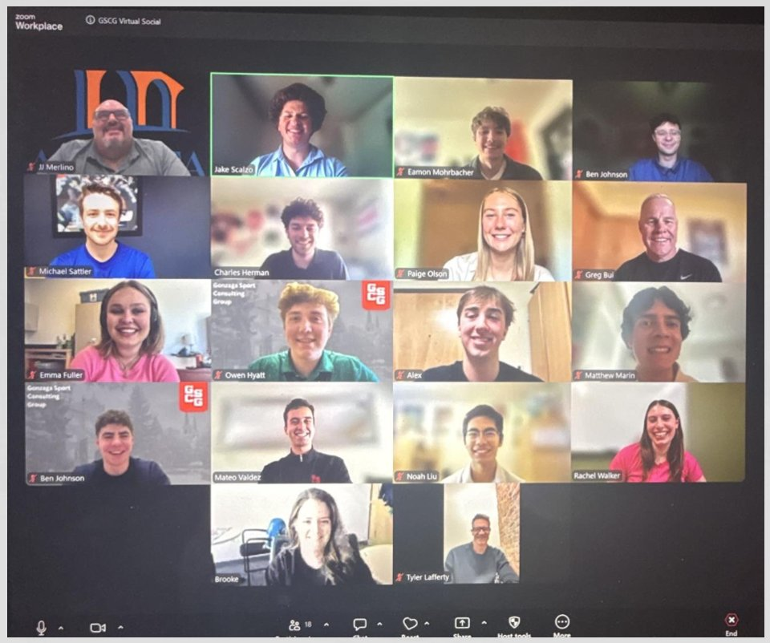
The Advisory Board met several times on structure, client selection, and growth, then put advisors and students on one call to get to know each other.
Four voices up front. All eighteen are one click away.
"Failure and rejection is just redirection. It is true, and it has been true in my own life."
Allison Kann"I did not expect to walk into a full boardroom. Presenting under pressure and feeling confident in the work we had done was formative and memorable for all of us."
Noah Liu · Mariners team"The story I want to tell about my career should not be defined purely by successes or any given title. It should always be the push to do hard things and fail while doing them."
Jake Scalzo"I had no prior knowledge of sports analytics coming in, and seeing all of that hard work pay off at the final presentation showed me what I am capable of when I lean into something unfamiliar."
Kenzie Bushnell · Informatics team"Lisa said she chooses her job based on where she is at in life. Right now she is 'enjoying the comfort.' That is a skill in my opinion: to just absorb the place you are at in life. ... Frances was quick to say more than 75% of their work is a challenge. She highlights failures rather than successes, noting that without failure there is no growth. ... One takeaway from this semester is the importance of your network and helping one another grow. It was so awesome to watch us all help one another, and to see professionals do the same thing throughout their careers."
Samantha Smith"You don't need everything figured out. You just need to be willing to learn and grow along the way. ... Lean into the hard things. When I feel uncomfortable or in the unknown, that is where I have grown the most. And lean into communities. They are here to help. ... I felt super nervous coming into this experience and felt like I was not capable. After this semester, I have grown in my ability to sit with being uncomfortable and nervous. In those moments, that is when I figure out new ideas. All ideas don't need to be 100% correct before sharing."
Mia Crosby"The best way to respond to tough client feedback is to rebound, regroup, and channel your frustration into improvement. When we critique each other's ideas, they get better. When we listen to feedback from others, we are better. ... I worked on the same problem for weeks without completely understanding why. Then, in the last couple of weeks, it all came together. I'm proud of how I kept getting my work done and trusting the process. I can see myself growing as a leader, presenter, and researcher."
Thomas Banzhof"My key takeaway was relating everything back to my why. The story I want to tell about my career should not be defined purely by successes or any given title. It should always be the push to do hard things and fail while doing them. ... We as students are so focused on getting the seemingly right answer that we end up not thinking about the impact. The true importance is why something matters to a client, and that reframing is going to be central to how I approach projects going forward."
Jake Scalzo"My biggest takeaway was the significance of crafting meaningful relationships within the business world. When someone takes their time to invest in you, you can learn from that. As you grow, do the same for others. ... I've grown in my communication abilities. Talking with and listening to people in many different industries led me to grow in my professional adaptability and networking skills. I've learned to tailor my language and approach to each professional I meet."
Lauren Smith"Growth doesn't always follow a clear or linear path. It reflects the effort, curiosity, and initiative you bring to it. One of my biggest takeaways was how important relationships are in the growth process. Growth is not something you do alone. ... Hearing that if you're not being challenged, you're not growing. That was a powerful reminder. This experience pushed me to step outside my comfort zone in a way that led to meaningful growth, both personally and professionally."
Paige Olson"There are a million ways to get where you want to be, and the path is not linear. Failure and rejection is just redirection. It is true, and it has been true in my own life. That reminder was one thousand percent necessary. ... When you are faced with a problem, figure it out. Lean into it, and lean into others to solve it. Set yourself apart by focusing on the little things: remembering names, following up, fostering connections."
Allison Kann"One of my biggest takeaways was learning not only how to find meaningful information, but how to present it in a clear and powerful way. It's super important to know your stuff, but also to be able to talk about it and express why it matters. ... Every week was a different thing to research, presenting a new challenge. Learning to stay versatile and adapt was a major growing experience for me."
Cameron Ames"Work put in behind the scenes can be crucial in nurturing your skillset and added value to an organization. Even when it is not visible, it supports a wider career outlook. ... This semester made me significantly more open to growing through failure, and not strictly aiming to impress or expect perfection in every trial. I am a lot more open to learning through challenges."
Marcus Heppner"Nike reinforced how important it is to be intentional early in your career, defining your why, building relationships, and proactively setting up informational conversations. Most career paths are nonlinear, and staying open to different opportunities while developing core skills is what separates people."
Dylan Hite"This was my first time researching a topic in depth over an extended period of time. I had no prior knowledge of sports analytics coming in, and seeing all of that hard work pay off at the final presentation showed me what I am capable of when I lean into something unfamiliar."
Kenzie Bushnell"That presentation was one of the more stressful experiences I have had. I did not expect to walk into a full boardroom. Having that experience, presenting under pressure and feeling confident in the work we had done, was formative and memorable for all of us."
Noah Liu"When you're younger, there is time to put your head down and grind it out. As you grow, a transition into a role where work-life balance is more accepted becomes a decision you can make intentionally. Hearing that framing humanized the career grind for me."
Owen Hyatt"I have become more comfortable with spontaneity and being quick to react when problems arise. The socials were a great way to connect with team members I didn't otherwise get to interact with as much, and I'm excited for GSCG marketing to keep growing."
Emma Fuller"Find a balance between what you are doing professionally and what stage of life you are in. Build relationships and friendships that make your job easier and worthwhile. Those two things together, that is what stood out from this entire experience."
Eamon Mohrbacher"Being able to hear feedback and connect with professionals in the sports industry was so rewarding. Knowing that they were willing to give up time for us even though they had a game that same evening is something I will carry into my career."
Matthew Marin"It is always a privilege to present to our clients in person. The feedback we received was invaluable, and the willingness to connect personally after the meeting continues to reinforce how important GSCG is to student growth."
Rachel"Individual drive is key but ineffective if not paired with strong teamwork. Working with a shared vision makes the hard work easier, and empowers you to advocate for the positions that fit you best."
Charlie HermanAll eighteen reflections: gscg.pages.dev/newsletter/spring-2026/reflections/
The people who showed up for our students, our clients, and our mission.
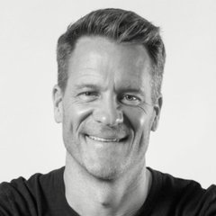
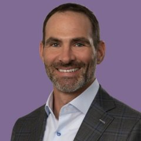
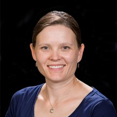
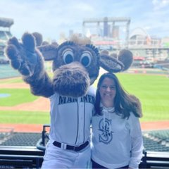
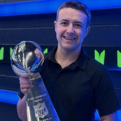
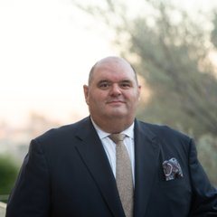
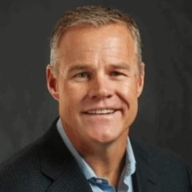
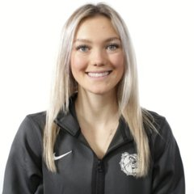
The Gonzaga University School of Business Administration, which makes the hands-on work of GSCG possible every semester.
Our student teams take on real sport-industry work every semester.
Start a projectForward it to a contact who would like to hear what we do.
Forward this newsletterTrips, competitions, and tools that make GSCG possible.
Give to GSCGGonzaga University
School of Business Administration
Spokane, WA
gscg@gonzaga.edu
About this newsletter. One web page, eight short sections. Every photo enlarges. Every link jumps. The full stories open in place. Print / Save PDF at the top gives you a US Letter copy with page numbers. © 2026 Gonzaga Sport Consulting Group.